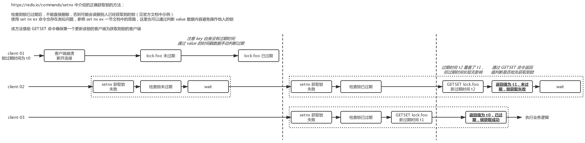
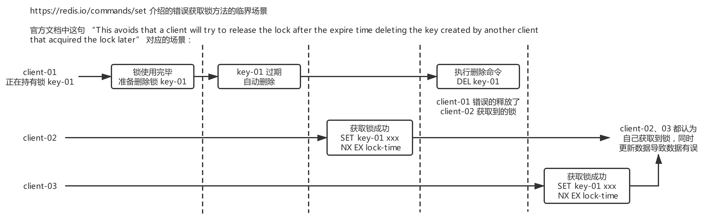

Redis 分布式锁
redis 官方文档中已经很好的说明了分布式锁的实现方式，这里仅会对官方文档做一些补充。
setnx 实现
https://redis.io/commands/setnx
注意 setnx 命令没有过期时间参数，其他语言，如 PHP 客户端中的过期时间参数实际为 setnx 和 expire 命令的组合，无法实现原子操作。
利用 setnx 正确获取锁的流程，检查到锁已过期后，不能直接删除，否则可能会误删别人已经获取到的锁。可以按照本节的方式，通过 getset 命令确保第一个更新该锁的客户端为获取到锁的客户端；也可以使用文档 set 命令一节中介绍的先判断 value 后执行删除的方式避免误删他人的锁。
下图展示了通过 setnx、getset 方法获取锁的流程，并说明了即使出现竞争条件仍然能够保证锁的排他性。

set nx ex 实现
This avoids that a client will try to release the lock after the expire time deleting the key created by another client that acquired the lock later.
官方文档中这一段话指出了，在主动释放锁时如果直接使用 DEL 命令删除，可能误删其他客户端正常获取到的锁，从而使多个客户端同时获取到锁。删除时应当借助 lua 脚本根据这个锁的 value 内容来判断删除的锁是否为本客户端之前持有的锁。
下图说明了这一错误可能发生的场景

虽然使用了 lua 脚本，但是只会操作准备释放的这个锁对应的这单个 key，不存在多个 key 的分片问题，在 redis cluster/codis 环境下都能够正常工作。
分布式高可用实现
https://redis.io/topics/distlock
前两种实现中加锁作用于 Redis 主节点上，由于 redis 主从异步复制特点，若在锁的 key 在尚未同步到 slave 节点时，master 节点就由于故障发生了主从切换，那么在 slave 节点提升为 master 后，就会出现锁丢失的情况。故 redis 官方文档提供了不同语言的 Redlock 算法实现。
主要实现方式为设置奇数个 redis master 服务器（不需要有 slave），同时向所有机器获取锁，只有在半数以上机器成功获取到锁的客户端为最终获取锁的客户端。
这种方式可能存在的问题及如何避免：
redis 存在 r1-r5 五个实例，客户端 c1 在 r1-r3 获取了锁，此时 r3 重启所有数据丢失，客户端 c2 便可以在 r3-r5 上同样获取到半数以上的锁，这样客户端 c1、c2 都认为自己获取到了锁，引起数据安全性问题。
方法一是开启 AOF 持久化配置 fsync=always，如果能够保证崩溃后数据完全不丢失，则可以避免这种情况，但是通常这样设置带来的性能损耗是无法接受的。这样保证一致性但是损失性能。
方法二是让崩溃的 redis（如 r3）重启后，等待一个锁的 TTL 时间后再提供服务，以保证这台 redis 上的所有键都过期删除，避免出现多个客户端都认为从这台 redis 上成功获取到了锁。但此时集群中为偶数个服务器，若同时可用实例数过少，客户端获取锁时可能无法满足半数以上的要求，导致可能需要多次重试。这样保证一致性但是损失可用性。
数据一致性、服务可用性、分区容错性无法同时得到满足。
使用建议
一般业务场景下，如不需要考虑 redis 服务器崩溃等极端情况下的数据一致性，建议优先使用 set nx ex 方法，若不愿意使用 lua 脚本则应选择 setnx 方法。
若需要考虑到 redis 崩溃等情况，只能选择分布式高可用实现方案。